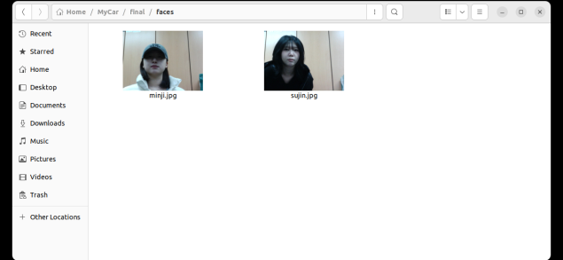
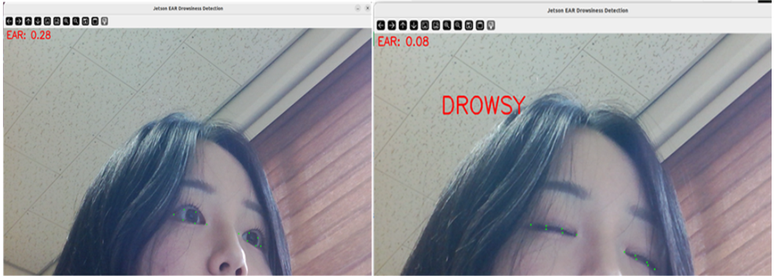

핵심 구현
01
얼굴 등록 및 임베딩 생성
사용자 얼굴을 촬영해 이름별로 등록하고, 이후 인증에 사용할 얼굴 특징 정보로 저장했습니다.
- GPIO15 버튼 입력 시 카메라가 자동 촬영되고, 입력한 이름으로 얼굴 이미지 저장
- 저장된 얼굴 이미지에서 InsightFace로 얼굴 특징 벡터 추출
- 추출한 얼굴 특징 벡터를 사용자 이름과 함께 DB(embeddings.pkl)에 저장
- 저장된 얼굴 정보를 이후 운전자 인증의 기준 데이터로 활용

이름별 사용자 얼굴 등록
02
실시간 운전자 얼굴 인증
실시간으로 입력되는 운전자 얼굴과 등록 정보를 비교해 등록 사용자 여부를 판단했습니다.
- 실시간 카메라 영상에서 InsightFace로 운전자 얼굴 특징 벡터 추출
- 현재 얼굴과 등록 DB의 사용자 특징 벡터 간 Cosine Similarity 계산
- 가장 높은 유사도가 0.45 이상이면 등록 사용자로 인증
- 미등록 사용자는 LOCKED, 등록 사용자는 READY 상태로 전환
 LOCKED
LOCKED
미등록 사용자 시동 차단
 READY
READY
등록 사용자 인증 후 시동 대기
03
인증 결과 기반 시동 제어
얼굴 인증 결과와 시동 버튼 입력을 연동해 등록 사용자만 Engine ON으로 전환되도록 구현했습니다.
- 인증된 사용자는 READY 상태에서 시동 버튼 입력 시 Engine ON으로 전환
- 인증 실패 시 시동 버튼을 눌러도 LOCKED 상태를 유지해 시동 차단
- Engine ON 상태에서만 졸음 감지를 활성화하고, 시동 OFF 시 졸음 감지 상태 초기화
인증 성공 · READY
→

시동 버튼 입력 · Engine ON
04
EAR 기반 졸음 감지 및 경고
EAR은 눈 감김 정도를 나타내는 값입니다. EAR이 0.20 미만으로 5초 이상 유지되면 졸음 상태로 판단했습니다.
- MediaPipe FaceMesh로 눈 주변 6개 랜드마크 추출
- 랜드마크 좌표를 이용해 EAR (Eye Aspect Ratio) 계산
- EAR 0.20 미만 상태의 지속 시간을 측정해 짧은 깜빡임과 지속적인 눈 감김 구분
- 눈 감김이 5초 이상 지속되면 DROWSY로 판정하고 LED · 부저 · UI 경고 출력

정상 상태 · EAR 0.28
눈 감김 상태 · EAR 0.08
↓
눈 감김 상태 5초 이상 지속

졸음 상태 판정 및 최종 경고